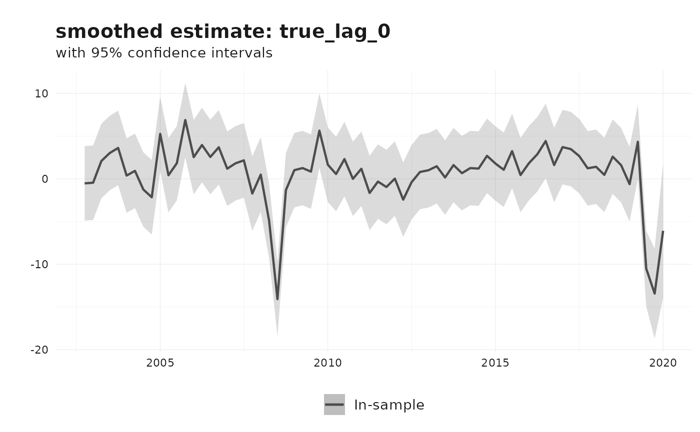
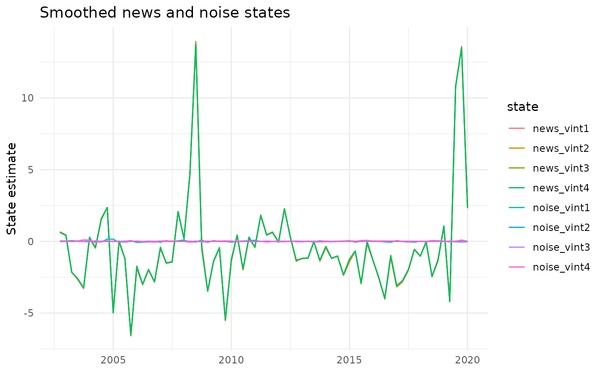

Nowcasting revisions using the Jacobs-Van Norden model
Source:vignettes/nowcasting-revisions-jvn.Rmd
nowcasting-revisions-jvn.RmdThis vignette illustrates how to estimate a Jacobs-Van Norden (JVN)
model for data revisions using reviser. The framework
follows the notation of Jacobs and Van Norden (2011) as closely
as possible, while documenting the specific restricted AR-based
implementation currently provided by jvn_nowcast().
The JVN model is useful when several vintages of the same macroeconomic series are available and revisions are systematic rather than purely random. It provides a state-space representation that decomposes revision errors into economically meaningful components and yields filtered and smoothed estimates of the latent “true” value.
Notation and setup
Following Jacobs and Van Norden (2011), superscripts refer to vintages and subscripts to time periods. Thus, (y_t^{t+i}) denotes the estimate for period (t) that is available in vintage (t+i).
For a fixed reference period (t), collect the first (l) estimates into the (l ) vector
[ y_t = ]
Let (y_t) denote the unobserved “true” value. The JVN framework writes the measurement error as the difference between the vintage vector and the true value replicated across vintages:
[ u_t = y_t - _l y_t,]
where (_l) is an (l ) vector of ones.
A key feature of the JVN framework is that the measurement error is decomposed into a news component and a noise component:
[ y_t = _l y_t + _t + _t.]
Here:
- (_t) captures news, i.e. information that was not available at the time of earlier releases and is incorporated rationally in later vintages;
- (_t) captures noise, i.e. transitory measurement error that is later removed.
As in the paper, the measurement equation is written with (H = 0), so all uncertainty enters through the state transition equation rather than through an additional observation disturbance.
State-space representation
The generic time-invariant state-space form is
[ y_t = Z _t,]
[ _{t+1} = T _t + R _t, _t N(0, I).]
In the general JVN framework, the state vector is partitioned as
[ _t = ]
where (_t) governs the dynamics of the true value, (_t) is the vector of news states, and (_t) is the vector of noise states.
The measurement matrix is
[ Z = [Z_1, Z_2, Z_3, Z_4]]
with (Z_1 = _l), (Z_2 = 0), (Z_3 = I_l), and (Z_4 = I_l), so that
[ y_t = y_t + _t + _t.]
This is the central decomposition in Jacobs and Van Norden (2011).
The implementation in reviser
The current reviser::jvn_nowcast() function implements a
restricted but practically useful version of the JVN model:
- The latent true value (y_t) follows an AR(p) process.
- The user may include a news component, a noise component, or both.
- Optional spillovers are implemented as diagonal first-order persistence in the news and/or noise state blocks.
- Estimation is by maximum likelihood.
This corresponds to the restricted AR-based specifications used in the empirical illustration of Jacobs and Van Norden (2011). In particular, when spillovers are included, the current implementation uses diagonal (T_3) and/or (T_4) blocks rather than unrestricted cross-vintage spillover matrices.
AR(p) specification
Suppose the true value follows an AR(p) process. Then the state
vector used by jvn_nowcast() is
[ _t = ]
where the news and noise blocks are included only if requested.
Observation equation
If both news and noise are included and (l) vintages are used, the observation equation is
[
y_t^{t+l} \end{bmatrix} =============
s & 0 & 0 & 1 & & 0 & 0 & 1 & &
0
& & & & & & & & & & &
1 & 0 & & 0 & 0 & 0 & & 1 & 0 & 0
& & 1 \end{bmatrix} _t. ]
Thus each observed vintage loads on the current true value and, if included, on its corresponding news and noise state.
Transition equation
For the AR(p) block, jvn_nowcast() uses a companion
form:
[ y_{t+1} ==============
_1 y_t + 2 y{t-1} + + p y{t-p+1}
- . ]
If news is included, the innovation to the true value also loads on the news shocks, as in the JVN framework. If noise is included, each noise state receives its own shock.
If spillovers are included, the implementation adds diagonal persistence parameters to the corresponding state block:
[ {j,t+1} = T{,j} _{j,t} + ,]
[ {j,t+1} = T{,j} _{j,t} + .]
These are restricted diagonal spillover effects. They should not be interpreted as the most general spillover dynamics discussed in the paper.
Example: AR(2) with four vintages
The paper’s empirical illustration considers an AR(2) specification with four vintages. In that case, the pure news model can be written as
[y_t^{t+3}
y_t^{t+4} \end{bmatrix} =============
}
_t \end{bmatrix}, ]
with transition equation
[}
_t \end{bmatrix} =============
0_{4 } & 0_{4 } & T_3 \end{bmatrix}
}
_{t-1} \end{bmatrix} + R _t. ]
Likewise, the pure noise model replaces (_t) by (_t) and (T_3) by (T_4). The most general model used in the paper’s Table 1 includes both (_t) and (_t), with diagonal (T_3) and (T_4) blocks.
In reviser, the same broad structure is available
through jvn_nowcast(), with the restriction that the
true-value dynamics are AR(p) and spillovers, if included, are
diagonal.
Preparing the data
We illustrate the use of jvn_nowcast() with Euro Area
GDP growth data from reviser::gdp. We first compute
quarter-on-quarter growth rates, then construct a wide vintage
matrix.
library(reviser)
library(dplyr)
library(tidyr)
library(tsbox)
library(ggplot2)
gdp_growth <- reviser::gdp %>%
tsbox::ts_pc() %>%
dplyr::filter(
id == "EA",
time >= min(pub_date),
time <= as.Date("2020-01-01")
) %>%
tidyr::drop_na()
df <- get_nth_release(gdp_growth, n = 0:3)
df
#> # Vintages data (release format):
#> # Format: long
#> # Time periods: 70
#> # Releases: 4
#> # IDs: 1
#> time pub_date value id release
#> <date> <date> <dbl> <chr> <chr>
#> 1 2002-10-01 2003-01-01 0.169 EA release_0
#> 2 2002-10-01 2003-04-01 0.124 EA release_1
#> 3 2002-10-01 2003-07-01 0.105 EA release_2
#> 4 2002-10-01 2003-10-01 0.0577 EA release_3
#> 5 2003-01-01 2003-04-01 0.0149 EA release_0
#> 6 2003-01-01 2003-07-01 -0.0133 EA release_1
#> 7 2003-01-01 2003-10-01 -0.0558 EA release_2
#> 8 2003-01-01 2004-01-01 -0.00601 EA release_3
#> 9 2003-04-01 2003-07-01 0.00503 EA release_0
#> 10 2003-04-01 2003-10-01 -0.0616 EA release_1
#> # ℹ 270 more rowsThe resulting object contains one row per reference period and one
column per vintage, in the format expected by
jvn_nowcast().
Estimation
The main arguments of jvn_nowcast() are:
-
df: a vintage matrix or data frame; -
e: the number of vintage columns used in estimation; -
ar_order: the autoregressive order (p) of the latent true-value process; -
h: optional forecast horizon; -
include_news: whether to include a news component; -
include_noise: whether to include a noise component; -
include_spillovers: whether to include diagonal spillover persistence; -
spillover_news,spillover_noise: which block(s) receive spillover persistence; -
standardize: whether to standardize the vintage matrix before estimation.
The argument method currently only accepts
"MLE". Numerical optimization is controlled through
solver_options, where the user may choose among optimizers
such as "L-BFGS-B", "BFGS",
"Nelder-Mead", "nlminb", or
"two-step".
News and noise model without spillovers
fit_nn <- jvn_nowcast(
df = df,
e = 4,
ar_order = 2,
h = 0,
include_news = TRUE,
include_noise = TRUE,
include_spillovers = FALSE,
method = "MLE",
standardize = FALSE,
solver_options = list(
method = "L-BFGS-B",
se_method = "hessian"
)
)
summary(fit_nn)
#>
#> === Jacobs-Van Norden Model ===
#>
#> Convergence: Success
#> Log-likelihood: 256.22
#> AIC: -490.44
#> BIC: -465.7
#>
#> Parameter Estimates:
#> Parameter Estimate Std.Error
#> rho_1 0.900 0.278
#> rho_2 -0.236 0.234
#> sigma_e 0.001 0.540
#> sigma_nu_1 0.070 0.006
#> sigma_nu_2 0.052 0.004
#> sigma_nu_3 0.001 0.036
#> sigma_nu_4 0.633 0.210
#> sigma_zeta_1 0.001 0.021
#> sigma_zeta_2 0.001 0.009
#> sigma_zeta_3 0.001 0.017
#> sigma_zeta_4 0.042 0.004This specification estimates a model with both news and noise components, but no persistence in the measurement-error states.
Adding spillovers
fit_full <- jvn_nowcast(
df = df,
e = 4,
ar_order = 2,
h = 0,
include_news = TRUE,
include_noise = TRUE,
include_spillovers = TRUE,
spillover_news = TRUE,
spillover_noise = TRUE,
method = "MLE",
standardize = FALSE,
solver_options = list(
method = "L-BFGS-B",
se_method = "hessian"
)
)
summary(fit_full)
#>
#> === Jacobs-Van Norden Model ===
#>
#> Convergence: Success
#> Log-likelihood: 267.95
#> AIC: -497.91
#> BIC: -455.18
#>
#> Parameter Estimates:
#> Parameter Estimate Std.Error
#> rho_1 0.252 0.103
#> rho_2 0.101 0.096
#> sigma_e 0.376 0.126
#> sigma_nu_1 0.001 0.022
#> sigma_nu_2 0.043 0.005
#> sigma_nu_3 0.006 0.000
#> sigma_nu_4 3.978 4.439
#> sigma_zeta_1 0.053 0.007
#> sigma_zeta_2 0.004 0.000
#> sigma_zeta_3 0.016 0.006
#> sigma_zeta_4 0.037 0.002
#> T_nu_1 0.188 0.092
#> T_nu_2 0.177 0.095
#> T_nu_3 0.173 0.096
#> T_nu_4 0.172 0.096
#> T_zeta_1 -0.020 0.171
#> T_zeta_2 -0.900 0.000
#> T_zeta_3 -0.386 0.294
#> T_zeta_4 0.147 0.143When include_spillovers = TRUE, the model adds diagonal
persistence parameters for the selected measurement-error blocks. These
correspond to restricted spillover effects.
Standardization
In the paper’s empirical illustration, vintages are approximately standardized using the mean and standard deviation of the final vintage before estimation. The package provides an optional argument for this purpose:
fit_std <- jvn_nowcast(
df = df,
e = 4,
ar_order = 2,
include_news = TRUE,
include_noise = TRUE,
include_spillovers = TRUE,
standardize = TRUE
)If standardize = TRUE, scaling metadata are returned in
the scale element of the fitted object.
Model output
A fitted jvn_model object contains:
-
states: filtered and smoothed state estimates; -
jvn_model_mat: estimated state-space matrices; -
params: parameter estimates and standard errors; -
fit: raw optimizer output; -
loglik,aic,bic: fit statistics; -
data: the preprocessed input data; -
scale: scaling metadata, if standardization was used; -
cov: estimated covariance matrix of the parameters, if available.
The parameter table includes:
-
rho_1, ..., rho_pfor the AR coefficients; -
sigma_efor the innovation standard deviation of the true-value process; -
sigma_nu_jfor news shocks; -
sigma_zeta_jfor noise shocks; -
T_nu_jand/orT_zeta_jfor diagonal spillover persistence parameters.
Filtered and smoothed estimates
The states element is returned as a tidy tibble. The
state named true_lag_0 corresponds to the current latent
true value (y_t).
fit_full$states %>%
dplyr::filter(state == "true_lag_0") %>%
dplyr::slice_tail(n = 8)
#> # A tibble: 8 × 7
#> time state estimate lower upper filter sample
#> <date> <chr> <dbl> <dbl> <dbl> <chr> <chr>
#> 1 2018-04-01 true_lag_0 0.460 -3.90 4.82 smoothed in_sample
#> 2 2018-07-01 true_lag_0 2.60 -1.76 6.96 smoothed in_sample
#> 3 2018-10-01 true_lag_0 1.59 -2.77 5.95 smoothed in_sample
#> 4 2019-01-01 true_lag_0 -0.625 -4.99 3.74 smoothed in_sample
#> 5 2019-04-01 true_lag_0 4.34 -0.0206 8.71 smoothed in_sample
#> 6 2019-07-01 true_lag_0 -10.5 -14.9 -6.08 smoothed in_sample
#> 7 2019-10-01 true_lag_0 -13.4 -18.7 -8.15 smoothed in_sample
#> 8 2020-01-01 true_lag_0 -6.08 -13.9 1.77 smoothed in_sampleFiltered estimates use only information available up to time (t), while smoothed estimates use the full sample and are therefore more appropriate for ex post historical analysis.
Plotting
The default plot method displays one selected state. By default, it
plots the filtered estimate of true_lag_0.
plot(fit_full)
To inspect the smoothed estimate of the latent true value:
plot(fit_full, state = "true_lag_0", type = "smoothed")
We can also visualize the news and noise states directly.
fit_full$states %>%
dplyr::filter(
filter == "smoothed",
grepl("news|noise", state)
) %>%
ggplot(aes(x = time, y = estimate, color = state)) +
geom_line() +
labs(
title = "Smoothed news and noise states",
x = NULL,
y = "State estimate"
) +
theme_minimal()
Comparing nested specifications
The JVN framework nests several empirically relevant cases.
Pure noise
fit_noise <- jvn_nowcast(
df = df,
e = 4,
ar_order = 2,
include_news = FALSE,
include_noise = TRUE,
include_spillovers = FALSE,
solver_options = list(method = "L-BFGS-B")
)Pure news
fit_news <- jvn_nowcast(
df = df,
e = 4,
ar_order = 2,
include_news = TRUE,
include_noise = FALSE,
include_spillovers = FALSE,
solver_options = list(method = "L-BFGS-B")
)News with spillovers
fit_news_spill <- jvn_nowcast(
df = df,
e = 4,
ar_order = 2,
include_news = TRUE,
include_noise = FALSE,
include_spillovers = TRUE,
spillover_news = TRUE,
spillover_noise = FALSE,
solver_options = list(method = "L-BFGS-B")
)Noise with spillovers
fit_noise_spill <- jvn_nowcast(
df = df,
e = 4,
ar_order = 2,
include_news = FALSE,
include_noise = TRUE,
include_spillovers = TRUE,
spillover_news = FALSE,
spillover_noise = TRUE,
solver_options = list(method = "L-BFGS-B")
)Information criteria
dplyr::bind_rows(
data.frame(
model = "Pure noise",
loglik = fit_noise$loglik,
aic = fit_noise$aic,
bic = fit_noise$bic
),
data.frame(
model = "Pure news",
loglik = fit_news$loglik,
aic = fit_news$aic,
bic = fit_news$bic
),
data.frame(
model = "Noise + spillovers",
loglik = fit_noise_spill$loglik,
aic = fit_noise_spill$aic,
bic = fit_noise_spill$bic
),
data.frame(
model = "News + spillovers",
loglik = fit_news_spill$loglik,
aic = fit_news_spill$aic,
bic = fit_news_spill$bic
),
data.frame(
model = "News + noise + spillovers",
loglik = fit_full$loglik,
aic = fit_full$aic,
bic = fit_full$bic
)
)
#> model loglik aic bic
#> 1 Pure noise 232.0056 -450.0113 -434.2718
#> 2 Pure news 255.0923 -496.1846 -480.4451
#> 3 Noise + spillovers 236.9075 -451.8151 -427.0816
#> 4 News + spillovers 265.2135 -508.4270 -483.6935
#> 5 News + noise + spillovers 267.9527 -497.9055 -455.1841These comparisons are often useful in practice, but they should be interpreted with care when parameters are on the boundary of the parameter space, for example when some standard deviations are estimated close to zero.
Forecasting and extension of the state estimates
The argument h extends the state estimates out of sample
by appending (h) periods with missing observations and running the
Kalman filter and smoother on the augmented system.
fit_fc <- jvn_nowcast(
df = df,
e = 4,
ar_order = 2,
h = 4,
include_news = TRUE,
include_noise = TRUE,
include_spillovers = FALSE,
solver_options = list(method = "L-BFGS-B")
)
fit_fc$states %>%
dplyr::filter(state == "true_lag_0", filter == "filtered") %>%
dplyr::slice_tail(n = 8)
#> # A tibble: 8 × 7
#> time state estimate lower upper filter sample
#> <date> <chr> <dbl> <dbl> <dbl> <chr> <chr>
#> 1 2019-04-01 true_lag_0 0.147 -1.09 1.39 filtered in_sample
#> 2 2019-07-01 true_lag_0 0.299 -0.941 1.54 filtered in_sample
#> 3 2019-10-01 true_lag_0 0.0530 -1.19 1.29 filtered in_sample
#> 4 2020-01-01 true_lag_0 -3.73 -4.97 -2.49 filtered in_sample
#> 5 2020-04-01 true_lag_0 -2.43 -4.11 -0.752 filtered out_of_sample
#> 6 2020-07-01 true_lag_0 -1.31 -3.14 0.521 filtered out_of_sample
#> 7 2020-10-01 true_lag_0 -0.604 -2.47 1.27 filtered out_of_sample
#> 8 2021-01-01 true_lag_0 -0.236 -2.11 1.64 filtered out_of_sampleThe sample column distinguishes between in-sample and
out-of-sample periods.
Numerical options
The function exposes several useful numerical controls through
solver_options.
Optimizer choice
fit_alt <- jvn_nowcast(
df = df,
e = 4,
ar_order = 2,
include_news = TRUE,
include_noise = TRUE,
solver_options = list(
method = "nlminb",
maxiter = 2000
)
)Multi-start optimization
For more difficult specifications, multi-start optimization may help avoid poor local optima.
fit_ms <- jvn_nowcast(
df = df,
e = 4,
ar_order = 2,
include_news = TRUE,
include_noise = TRUE,
include_spillovers = TRUE,
solver_options = list(
method = "L-BFGS-B",
n_starts = 5,
seed = 123,
maxiter = 2000
)
)Standard-error estimation
The package currently supports:
- Hessian-based standard errors;
- QML sandwich covariance estimates;
- no standard-error calculation.
fit_qml <- jvn_nowcast(
df = df,
e = 4,
ar_order = 2,
include_news = TRUE,
include_noise = TRUE,
solver_options = list(
method = "L-BFGS-B",
se_method = "qml",
qml_score_method = "central"
)
)Interpretation
The JVN model helps distinguish different sources of revisions.
News
Large estimated values of (_{j}) indicate that early releases omit information that is incorporated in subsequent vintages. In that case, revisions are informative updates rather than corrections of transitory noise.
Noise
Large estimated values of (_{j}) indicate that early releases are contaminated by measurement error that is later removed. In that case, revisions are partly predictable.
Remarks on scope
The original paper presents a broad state-space framework that can
accommodate richer dynamics for the true value and measurement errors.
The current reviser implementation is intentionally
narrower:
- the true value follows an AR((p)) process;
- the observation equation uses the JVN decomposition into truth, news, and noise;
- spillovers are implemented through diagonal persistence in the news and/or noise blocks.
This restricted specification is still rich enough to replicate the main empirical model class used in the paper’s illustration and to support practical revision modeling, filtering, smoothing, and forecasting.